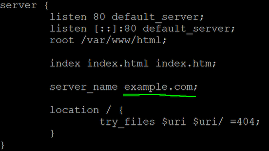
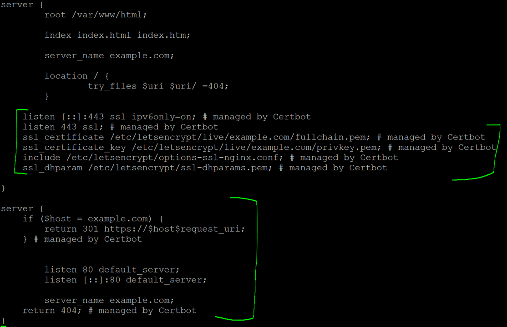

This is a short step-by-step recipe for setup of secure HTTPS connections for Nginx web server, using the free "Let's Encrypt" service. This recipe is used in courses IDATA2301 Web technologies and IDATA2306 Application Development at NTNU, campus Aalesund.
This recipe is based on the guide "Using Free Let’s Encrypt SSL/TLS Certificates with NGINX".
Before you begin - you should get a domain name for your server. This step is optional, but recommended. Alternatively, you can use HTTPS for an IP address, but that is not conventional. Domain registration is not described here.
Instructions:
sudo apt update
sudo apt install certbot python3-certbot-nginx
sudo nano /etc/nginx/sites-enabled/default. There you
specify line server_name yourDomain; For example, if the
domain is example.com, then the file looks as follows:

sudo /etc/init.d/nginx restart
example.com with your domain!)
sudo certbot --nginx -d example.com
.pem file
with the certificate, including the private key. Keep it secret! See the
lines added by Certbot marked in the picture below.

sudo crontab -e):
0 12 * * * /usr/bin/certbot renew --quiet